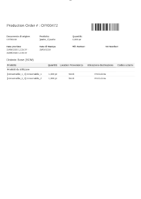
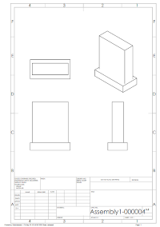
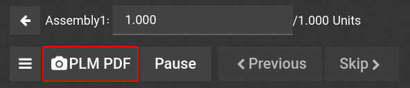
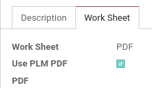

This module integrates the ability in the work orders to switch the preview from the routing worksheet to the 2D drawing, and vice versa.
Possibility from the routing tab to enable/disable the use of its worksheet when processing workorder
PLM Report PDF Workorder is only available in Enterprise version of Odoo.